Carry Look-Ahead Adder背后的动机：
在纹波进位加法器中，对于每个加法器块，要添加的两个位立即可用。 但是，每个加法器块等待进位从其前一个块到达。 因此，在输入进位已知之前，不可能生成任何块的和和进位。 该 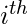 块等待 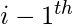 阻止产生它的携带。 因此将存在相当大的时间延迟，即进位传播延迟。
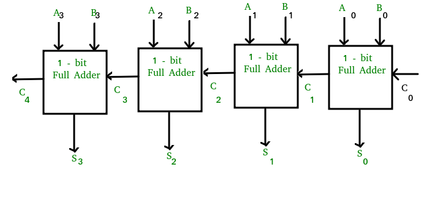
考虑上面的4位纹波进位加法器。 总和 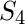 一旦输入信号被施加到相应的全加器，就由相应的全加器产生。 但是进位输入 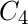 在携带之前，它的最终稳态值不可用 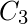 有稳定的状态值。 同样 依赖于取决于 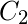 和 上 。 因此，虽然进位必须传播到所有阶段以便输出 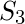 并携带 解决他们的最终稳态价值。
传播时间等于每个加法器块的传播延迟，乘以电路中的加法器块的数量。 例如，如果每个全加器级具有20纳秒的传播延迟，那么 在60（20×3）纳秒之后将达到其最终正确值。 如果我们扩展添加更多位数的阶段数，情况会变得更糟。
携带前瞻加法器：
进位超前加法器通过引入更复杂的硬件来减少传播延迟。 在该设计中，适当地变换纹波进位设计，使得加法器的固定比特组上的进位逻辑被简化为两级逻辑。 让我们详细讨论一下设计。
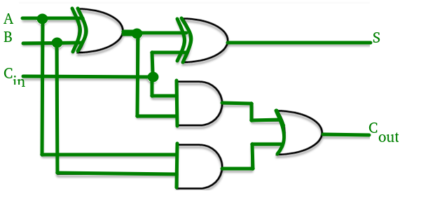
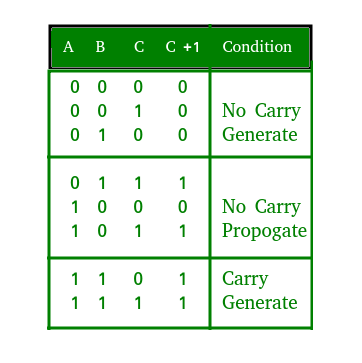
考虑上面显示的全加器电路和相应的真值表。 我们将两个变量定义为'进位生成' 和'携带传播' 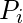 然后，
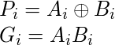
和输出和进位输出可以用进位生成表示 并传播 如
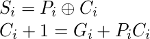
哪里 两者都产生携带 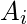 ， 无论输入进位如何均为1。 与来自的传播有关 至 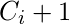 。
4阶段进位超前加法器中每级的进位输出布尔函数可表示为

从上面的布尔方程我们可以观察到 不必等待 和 传播，但实际上 与...同时传播 和 。 由于每个进位输出的布尔表达式是乘积之和，因此这些可以用一个AND门级别后跟一个OR门来实现。
每个进位输出实现三个布尔函数（ ， 和 ）用于如下图所示的进位超前进位发生器。
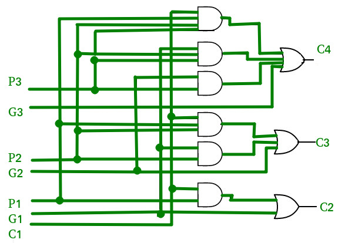
时间复杂度分析：
我们可以想到一个由两个“部分”组成的进位超前加法器
- 计算每个位的进位的部分。
- 为每个位位置添加输入位和进位的部分。
该 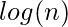 复杂性来自产生进位的部分，而不是产生位的电路。
现在，为了这一代  进位，我们需要在（n + 1）个输入之间执行AND。 加法器的复杂性取决于我们如何执行此AND操作。 如果我们有AND门，每个都有一个扇入（接受输入的数量）k，那么我们可以找到所有位的AND
进位，我们需要在（n + 1）个输入之间执行AND。 加法器的复杂性取决于我们如何执行此AND操作。 如果我们有AND门，每个都有一个扇入（接受输入的数量）k，那么我们可以找到所有位的AND  时间。 这用渐近符号表示为 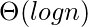 。
时间。 这用渐近符号表示为 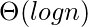 。
携带前瞻加法器的优点和缺点：
优点 -
- 传播延迟减少。
- 它提供了最快的加法逻辑。
缺点 -
- 随着变量数量的增加，Carry Look-ahead加法器电路变得复杂。
- 由于涉及更多硬件，电路成本更高。
GATE CS Corner问题
练习以下问题将帮助您测试您的知识。 所有问题都是在前几年的GATE或GATE Mock Tests中提出的。 强烈建议您练习它们。
参考文献 -
iitkgp.virtual-实验室
Carry-lookahead adder - 维基百科